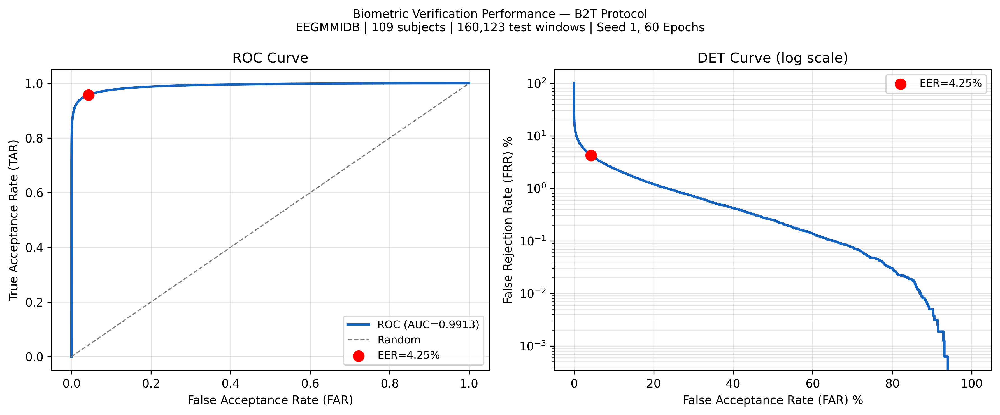

Why It Matters
Protocol Realism Changes the Story
Random splits understate difficulty. DOMCS-EEG evaluates the stronger and more realistic baseline-to-task protocol, exposing the true cost of cognitive-state shift in EEG biometric systems.
Compact Research Software
DOMCS-EEG is presented here as a compact, explorable system: protocol realism, cross-task verification, cognitive-state disentanglement, and deployment-facing performance in one interface.
Why It Matters
Random splits understate difficulty. DOMCS-EEG evaluates the stronger and more realistic baseline-to-task protocol, exposing the true cost of cognitive-state shift in EEG biometric systems.
Architecture
Shared feature extractor, dual projection heads, and auxiliary state supervision let the model retain identity cues while reducing task-specific leakage.
Interactive Experience

Verification behaviour under the realistic evaluation setting. The operating point near EER summarizes the balance between false acceptance and false rejection.
Seed Robustness
| Seed | EER% | AUC | CRR% |
|---|
Experience Control
Product Path
Live identity verification kiosk with EEG acquisition, session-aware enrollment, and confidence visualisation.
Decision-support biometric module for high-assurance operator authentication where cognitive drift matters.
FastAPI inference endpoint, checkpoint registry, subject enrollment API, and browser dashboard using this interface.
Add open-set verification, calibration curves, external-session validation, and adversarial robustness stress testing.